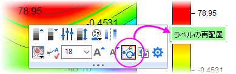

プロットにラベルを追加
Labelling-DataPoint
グラフを作成後、注釈を付けるためにプロットにラベルを追加する場合があります。以下のダイアログ/ツールを使用して操作できます。
作図の詳細ダイアログのラベルタブでラベルを追加
作図の詳細ダイアログのラベルタブを使用して、データプロットのすべてのポイントまたは特定のポイントにラベルを追加できます。ラベルタブ は、左パネルでデータプロットアイコンが選択されているときに、作図の詳細ダイアログボックスの右側パネルに表示されます。
作図の詳細を使用してラベルを追加する
- ラベル付けしたいデータプロットをダブルクリックします。
- 開いた作図の詳細ダイアログで、データプロットアイコンがダイアログの左側パネルで選択されている事を確認し、右側パネルのラベルタブに移動します。
- 有効にするチェックボックスを選択します。
- 一部のプロットタイプでは、指定した点のみを表示を選択して、スペースで区切られたポイントのインデックスのセットをテキストボックスに入力できることに注意してください。キーワード「開始」を使用して最初のポイントのみにラベルを付け、キーワード「終了」または「0」を使用してプロットの最後のポイントにラベルを付けます。
- ラベル形式リストを数値表示フォーマットとフォーマット指定形式文字列と共に使用して、ラベルを作成します。ラベル形式をカスタムに設定すると、ワークシートとプロジェクトのメタデータでポイントにラベルを付けることができます。
- ラベルタブのコントロールを使い、必要な他のラベルに関する設定（フォント、色、回転、オフセット、位置、引出し線など）を行います。あるいは、作図の詳細ダイアログを閉じ、データラベルミニツールバーやスタイル・書式ツールバーのボタンを使って編集することもできます。
特定のラベルタブについてはこちらを確認してください：
| Note: 事前に指定されたOriginのラベル列またはExcelワークシート列の値を使用して、グラフのデータポイントにラベルを付けることができます。この方法によるポイントのラベル付けは古い方法で、前後に互換性が残ります。Originの以前のバージョンでは、指定されたラベル列は作図の詳細ダイアログで別のデータセットとして表示されていました。Origin 2020bからは、指定されたラベル列は、単純にデータプロットの表示オプションとして扱われ、共通のラベルタブで設定します。
|
ミニツールバーでラベルを追加
データラベルを表示ボタンを使用
Origin 2020以降、素早いグラフ編集を行うためのミニツールバーを導入しました。データポイントのラベル付けのために以下のコントロールを使用できます。
- プロットグループおよび単一プロットのラベルを素早く追加/削除するには、プロット上でクリックしてミニツールバーを表示し、以下のように操作します。
- グループタブの、データラベルを表示ボタン
 をクリックして、現プロットグループの全プロットにラベルを追加/削除します。デフォルトでは、データポイントのY値がラベルとして表示されます。
をクリックして、現プロットグループの全プロットにラベルを追加/削除します。デフォルトでは、データポイントのY値がラベルとして表示されます。
- 単一タブ
 の、データラベルを表示ボタンをクリックして、現プロットにラベルを追加/削除します。デフォルトでは、データポイントのY値がラベルとして表示されます。
の、データラベルを表示ボタンをクリックして、現プロットにラベルを追加/削除します。デフォルトでは、データポイントのY値がラベルとして表示されます。
- グラフ内の単一ラベルを素早く追加するには、CTRLキーを押しながらクリックして1点(シンボルでも棒でも)のみ選択し、ミニツールバーのデータラベルを表示ボタンをクリックします。デフォルトでは、データポイントのY値がラベルとして表示されます。
- 単一のデータラベルを素早く編集するには、Ctrlキーを押しながらラベルをクリックします。使用可能なボタンから、ラベルをカスタマイズします。
- 等高線図にラベル付けするときは、プロットをクリックして、等高線ラベルを表示ボタンをクリックします。軸スケールの拡大ボタン
 を使用して軸のスケールを変更する（ズームイン）場合は、ポインタボタン
を使用して軸のスケールを変更する（ズームイン）場合は、ポインタボタン をクリックしてから、等高線図をもう一度クリックし、ラベルの再配置をクリックして、プロットのズーム部分にラベルを再描画します。
をクリックしてから、等高線図をもう一度クリックし、ラベルの再配置をクリックして、プロットのズーム部分にラベルを再描画します。
- 
ラベルのソースを選択する
ラベルを有効にしたら（作図の詳細のラベルタブ、またはミニツールバーのデータラベルを表示ボタンを使用）、ラベルソースを指定する必要があります。
- プロット全体にラベルを付ける場合は、プロットデータを使用してプロットにラベルを付ける可能性があります。ラベルを選択し、ミニツールバーのラベルソースボタンをクリックし、ラベルソース（X、Y、XYなど）を指定できます。
- 単一のポイントにラベルを付ける場合は、プロットデータ、列ラベル行データを使用するか、LabTalk置換を使用してカスタムデータラベルを作成することができます。
- ラベル編集オプションの全範囲にアクセスするには、ラベル上でダブルクリックするか、作図の詳細を開くボタンをクリックして作図の詳細を開きます。
テキストまたはデータラベルツールでラベルを追加
プロット操作・オブジェクト作成ツールバーのテキストツール を使用すると、グラフウィンドウの任意の場所にテキストラベルを追加できます 。
を使用すると、グラフウィンドウの任意の場所にテキストラベルを追加できます 。
プロット操作・オブジェクト作成ツールバーのデータラベルツール を 使用すると、2Dグラフおよび等高線図で特定の点を選択してラベルを付けることができます。
を 使用すると、2Dグラフおよび等高線図で特定の点を選択してラベルを付けることができます。